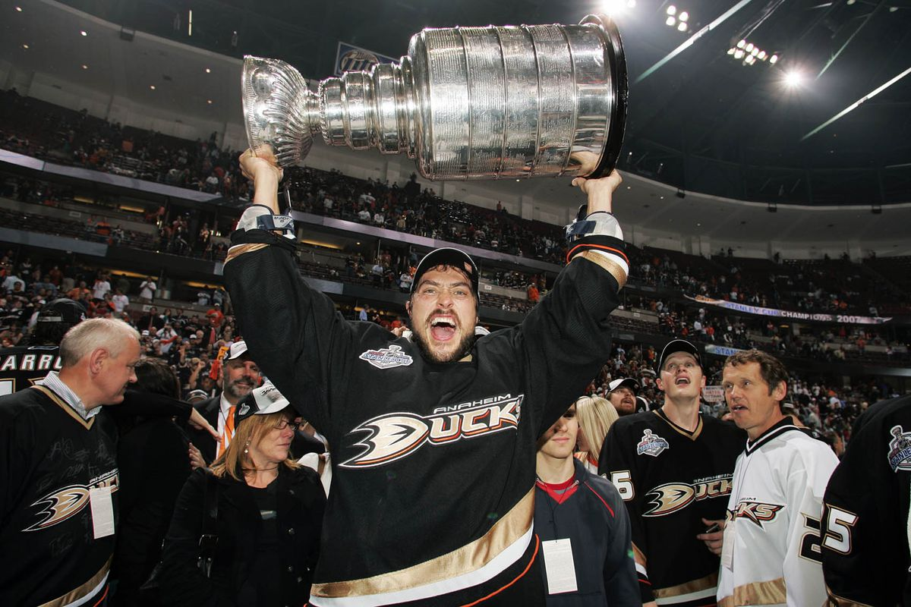

Ohjelmassa on periaatteessa kolme osiota:
1. Ensimmäisenä vasemmalla * Hall of Fame * taulu, joka näyttää mestarit ja mestaruuksien määrän. Yritä arvostaa näitä joukkueita.
2. Hakukenttä, jonka avulla voit hakea joukkuetta joukkueen nimen tai managerin nimen perusteella.
3. Kun olet valinnut oikean joukkueen niin sen tiedot (joukkue- ja kausitiedot) ilmestyvät oikealle.Voit lisätä uusia joukkueita ja kausia tai poistaa niitä. Tee haluamasi muutokset suoraan haluamaasi kenttiin. Muutokset tallentuvat vain kun olet klikannut tallenna muutokset nappia. Löydät samat vaihtoehdot myös yläpaneelista.
Onnea matkaan!
